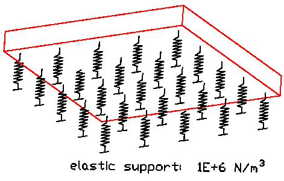

8.11.2.54 IfcModulusOfSubgradeReactionMeasure
IfcModulusOfSubgradeReactionMeasure is a geotechnical measure describing interaction between foundation structures and the soil. May also be known as bedding measure.
Usually measured in N/m3.
Type: REAL
HISTORY New type in IFC2x.
Figure 332 illustrates elastic support of a planar member.
 |
Figure 332 — Modulus of subgrade reaction measure |
XSD Specification:
<xs:simpleType name="IfcModulusOfSubgradeReactionMeasure">
<xs:restriction base="xs:double"/>
</xs:simpleType>
<xs:element name="IfcModulusOfSubgradeReactionMeasure-wrapper" nillable="true">
<xs:complexType>
<xs:simpleContent>
<xs:extension base="ifc:IfcModulusOfSubgradeReactionMeasure">
<xs:attributeGroup ref="ifc:instanceAttributes"/>
</xs:extension>
</xs:simpleContent>
</xs:complexType>
</xs:element>
EXPRESS Specification:
|
|
|
TYPE IfcModulusOfSubgradeReactionMeasure = REAL; |
|
 EXPRESS-G diagram
EXPRESS-G diagram
 Link to this page
Link to this page